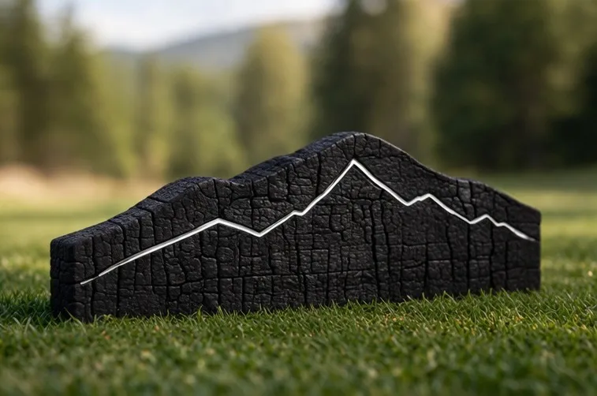
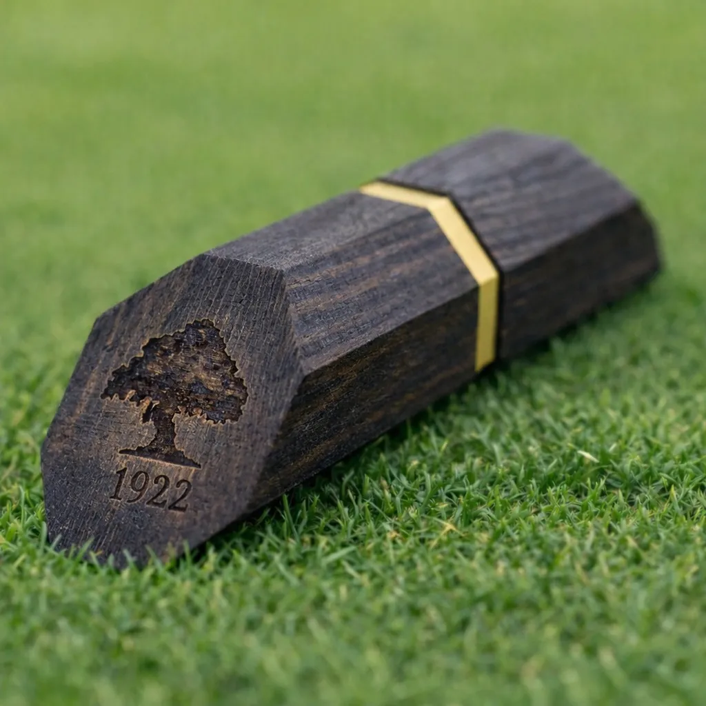
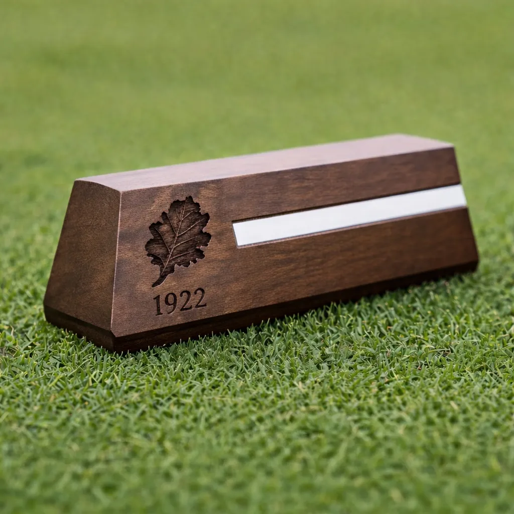
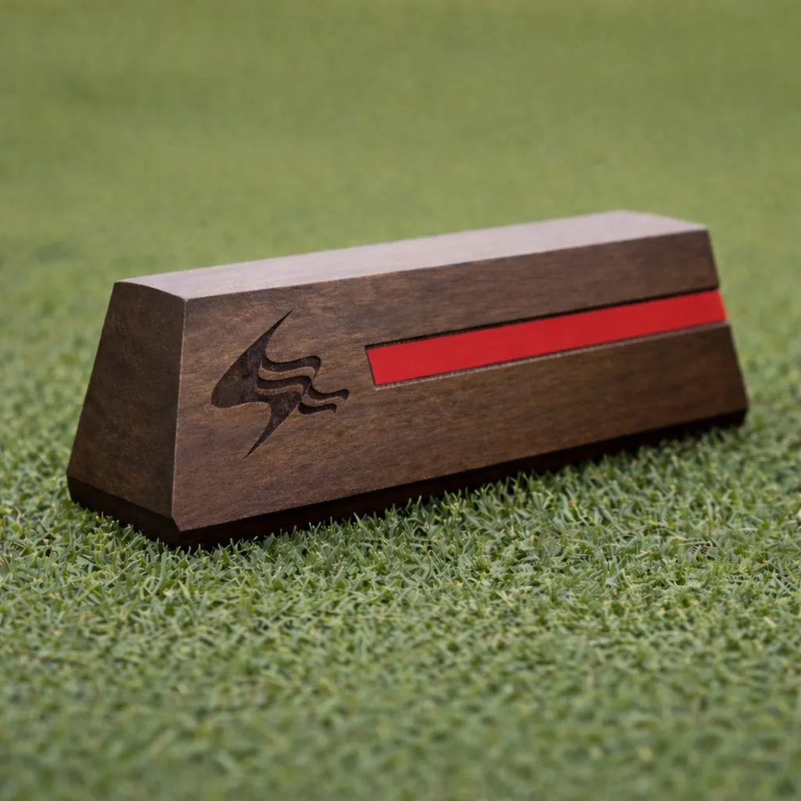
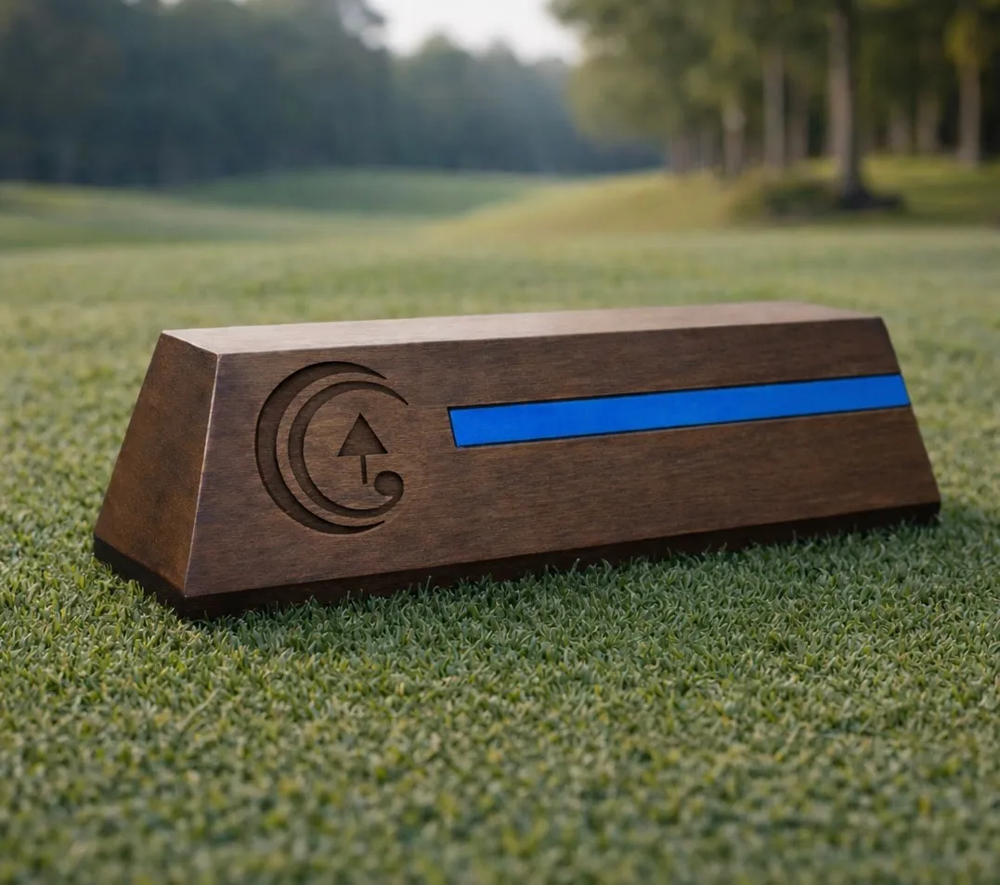
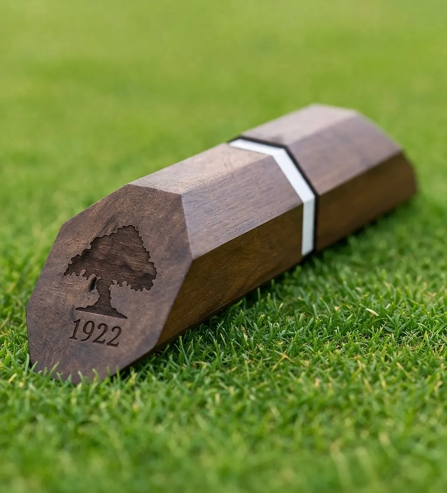
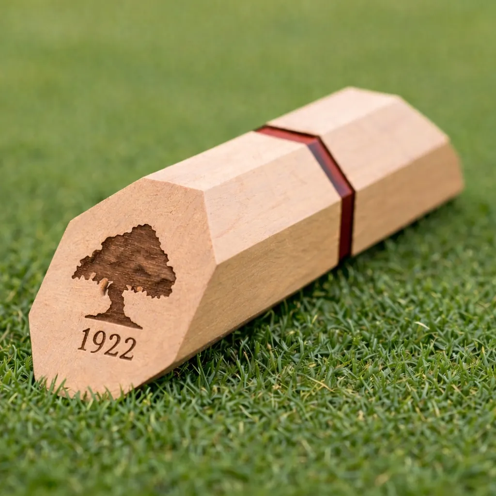
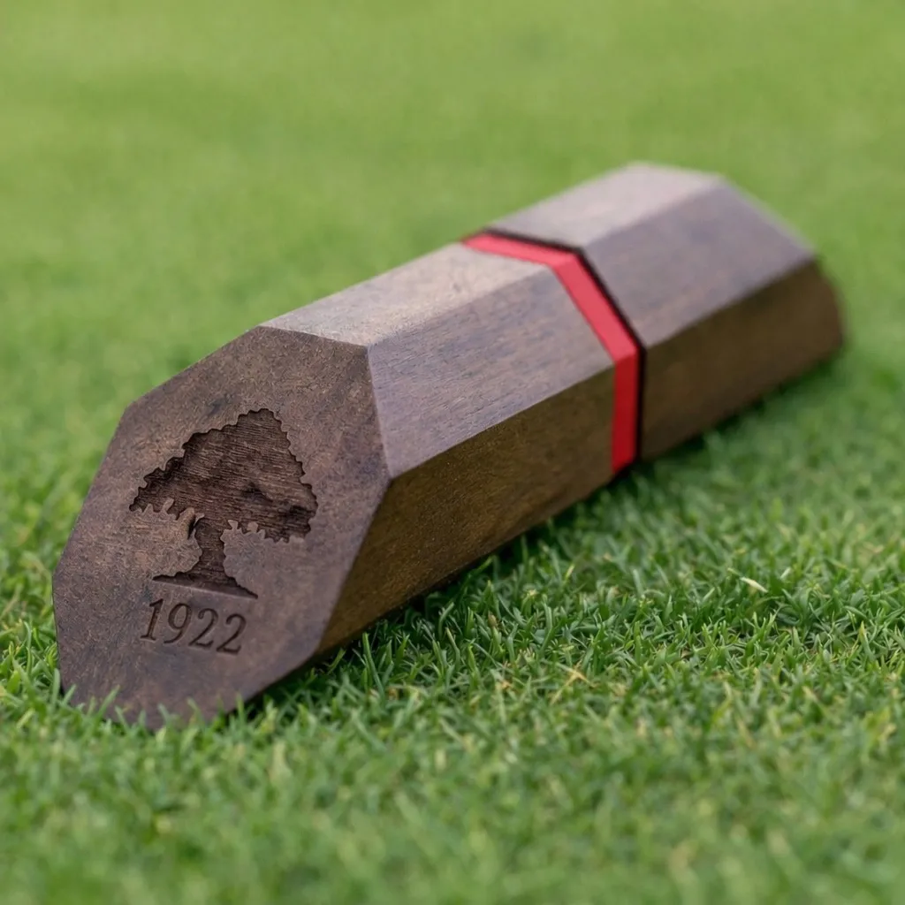
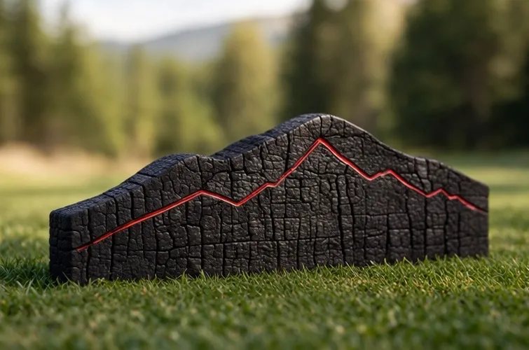
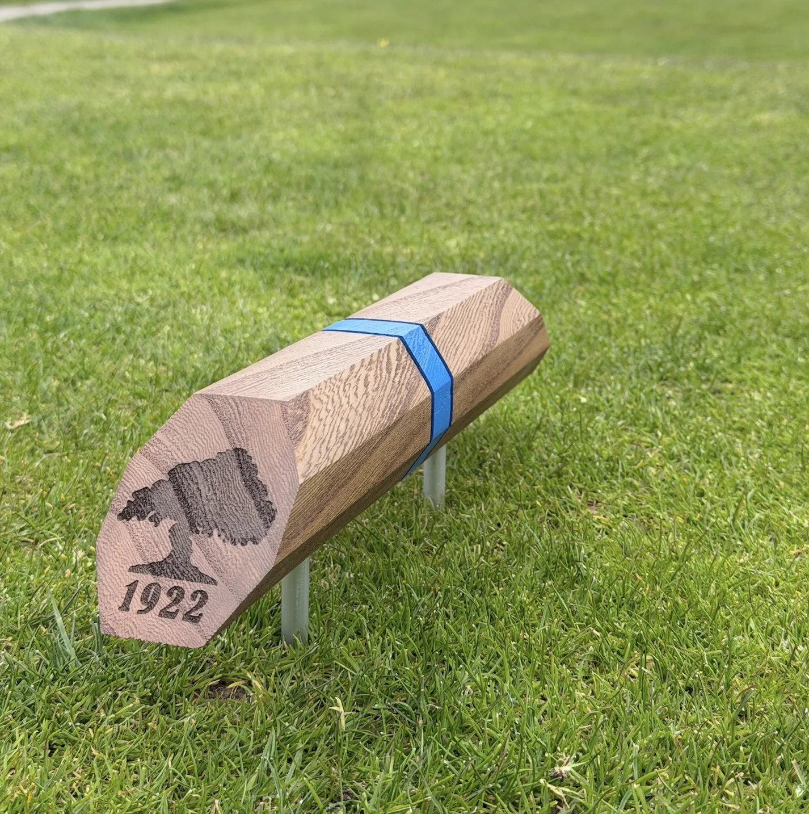

Tee markers
Designed and built for your tee boxes. Each set commissioned for a specific course.

Mountain silhouette marker -- charred timber with white metal ridge line inlay.

Dark walnut hexagonal marker with brass inlay stripe and engraved crest.

Walnut trapezoidal marker with white inlay stripe and oak leaf engraving.

Dark walnut rectangular marker with red inlay stripe and course logo.

Walnut marker with blue inlay stripe, photographed on the fairway.

Dark walnut hexagonal marker with white inlay stripe and engraved crest.

Light maple hexagonal marker with red inlay stripe and engraved crest.

Dark walnut hexagonal marker with red inlay stripe and engraved crest.

Mountain silhouette marker — charred timber with red metal ridge line inlay.

Walnut hexagonal marker with blue inlay stripe on steel legs.
Every set of tee markers is designed for a specific course. We work with superintendents, general managers, and course architects to develop markers that reflect the character and standards of their property. Each piece is hand-finished in our Vancouver studio.
← Back to collections